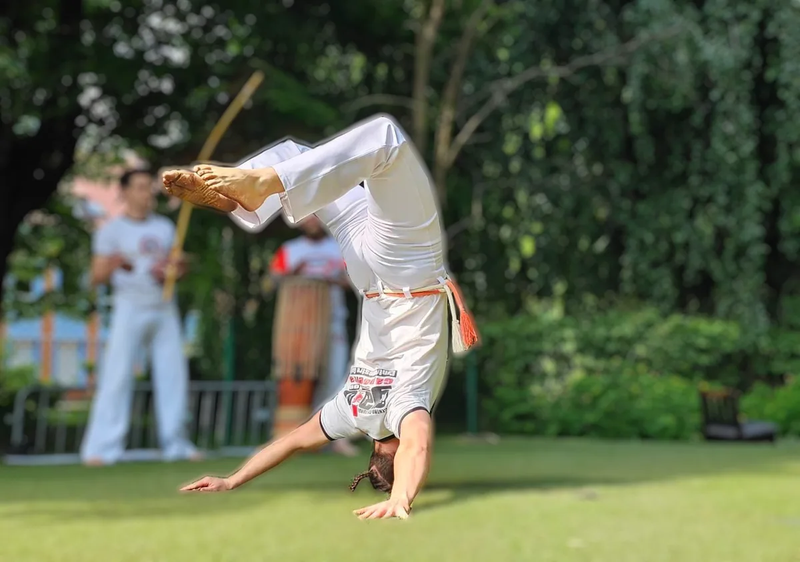
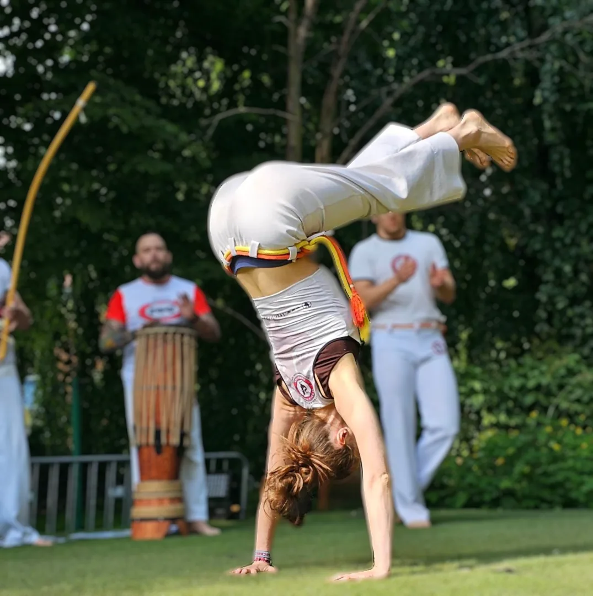
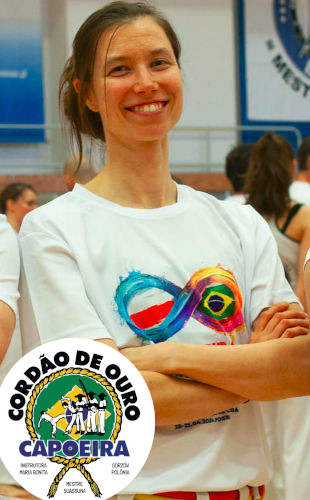
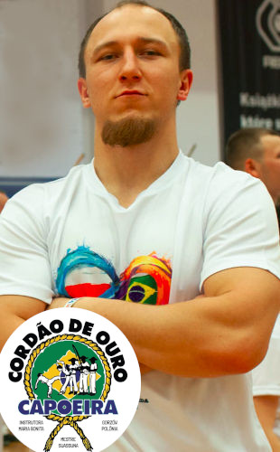
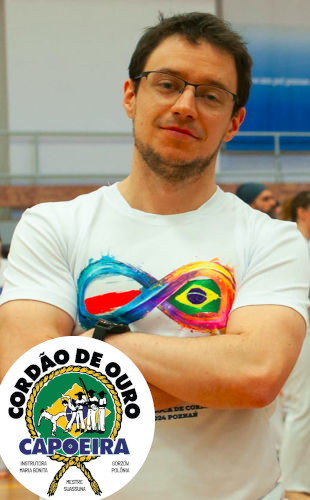

Poniedziałek
Dzieci18:00 – 18:45
Dorośli i młodzież18:30 – 20:00
Walka · taniec · muzyka
Odkryj radość ruchu. Trenuj z nami — zajęcia dla dzieci, młodzieży i dorosłych.
Dołącz do nas
Szkoła Podstawowa nr 46
Szczecin
Więcej niż sport
Capoeira to afrobrazylijski rytuał składający się z improwizowanej walki tanecznej między dwiema osobami otoczonymi przez grupę ludzi śpiewających i grających na instrumentach.
Ludzie często opisują capoeirę jako taniec, walkę lub grę, ale to, co sprawia, że ta artystyczna modalność jest tak niesamowita, to fakt, że są to wszystkie trzy elementy w jednym. Tańczysz, grasz i walczysz - wszystko w tym samym czasie.


Pochodzenie i ewolucja Capoeira jest przedmiotem ciągłej debaty. Najbardziej akceptowanym wyjaśnieniem jest to, że Capoeira ewoluowała podczas handlu niewolnikami, który rozpoczął się w XVI wieku. Niewolnicy byli pozostawieni woli swoich panów bez jakiejkolwiek formy samoobrony. Aby położyć kres zniewoleniu, zaczęli trenować walkę.
Właściciele niewolników zabraniali jakiejkolwiek formy treningu fizycznego, dlatego niewolnicy ukrywali swój trening jako taniec. Niewolnicy, którzy mieli szczęście uciec, zorganizowali i zarządzali społecznościami znanymi jako quilombos. Największym i najbardziej prężnym quilombos było Quilombo dos Palmares, w północno-wschodniej części Brazylii.
Niewolnicy, używając Capoeira, zjednoczyli się w buncie, który doprowadził do ich wolności.
Poznaj nas

Trenuje capoeirę od 13 lat. Brała udział w warsztatach capoeira w Polsce i Europie. Ma doświadczenie w prowadzeniu zajęć z dziećmi, młodzieżą i dorosłymi. Chętnie podzieli się swoją wiedzą zarówno w aspekcie fizycznym jak i muzycznym. Przekaże jak nauczyć się tricków. Nauczy grać na instrumentach wykorzystywanych na zajęciach. Zna pokaźną ilość piosenek. Podszkoli z języka portugalskiego. Nieustannie dąży do samorozwoju a jej motto życiowe to "Uwierz w proces".

Zainspirowany postacią z Tekkena trenuje capoeirę od 10 lat. Wielokrotny uczestnik warsztatów capoeiry w Polsce i całej Europie. Wyznawca siły i zdrowych wzorców ruchowych. Ponadto zawodnik jiu jitsu i trener samoobrony. Wierzy, że nieustanny rozwój jest kluczem do szczęścia w sporcie i w życiu codziennym. Jego misją jest zaszczepienie zdrowych nawyków sportowych w życiu codziennym dzieci, młodzieży oraz dorosłych.

Zaczął trenować Capoeirę w 2008 roku na złocistej, świnoujskiej plaży. Szczególną radość czerpie z elementów akrobatycznych, które dodają dynamiki i widowiskowości każdej grze w roda. Dzięki wieloletniemu doświadczeniu potrafi wnikliwie analizować ruchy i dostosowywać treningi do indywidualnych potrzeb swoich uczniów, inspirując ich do ciągłego doskonalenia.
Zrób pierwszy krok
Masz pytania o zajęcia? Skontaktuj się z Anią.
+48 789 188 133Ania Michałek